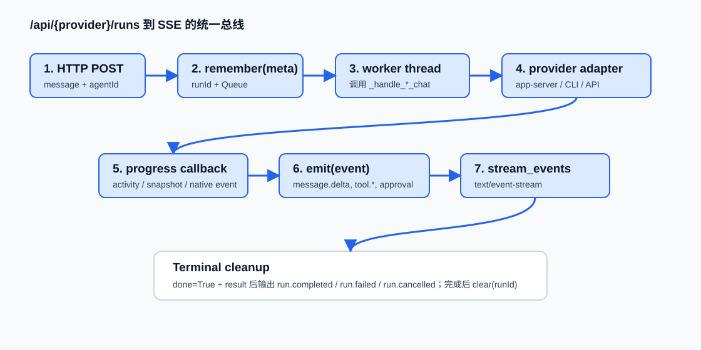

Bridge Happy Path 总线
主线是：请求进入 provider 专用 run handler，run handler 把执行工作丢到后台线程，真实 provider 的进度被回调成统一事件，最终由 ProviderRunBridge 以 SSE 输出。
详细链路说明

1. HTTP 路由命中 provider run handler
`/api/codex/runs`、`/api/claude-code/runs`、`/api/hermes/runs` 分别进入 `_handle_*_run_start`。Codex 要求 `conversationId`，Claude/Hermes 允许空 conversation 但仍会用它做 history/progress scope。
2. 创建 VO run meta
handler 生成 `runId`、`queue.Queue`、agent/profile/statusKey/conversationId，然后调用 `PROVIDER_RUN_BRIDGE.remember(meta)`。
3. 后台 worker 调用 blocking chat
worker 先 emit `run.started`，再调用 `_handle_codex_chat`、`_handle_claude_code_chat` 或 `_handle_hermes_chat`。这一步把阻塞 provider 调用从 HTTP 启动请求中移出。
4. progress callback 进入统一事件翻译
Codex 的 operation event、Claude 的 progress snapshot、Hermes 的 native event 会被映射成 `message.delta`、`reasoning.available`、`tool.started/completed/failed`、`approval.request`。
5. SSE 端点消费 queue
`_handle_*_run_events` 只是一层包装，最终调用 `ProviderRunBridge.stream_events(handler, run_id, label)`。如果 run 完成，它用 result fallback 输出 terminal event。
6. 结果归一化和清理
worker 把 result 写回 meta，finish idempotency，删除临时 progress event，terminal event 发出后 600 秒内 timer 清理 run meta。
linkage_inventory 筛选结果
| 链路 | 入口 | 终止点 | 优先级 |
|---|---|---|---|
| ProviderRunBridge common SSE registry | `remember(meta)` | `stream_events` terminal event 后 clear | P0 |
| Codex app-server JSONL RPC | `CodexAppServerClient.execute/send_chat_message` | `turn/completed` normalized result | P0 |
| Codex approval loop | Codex server request | respond 或 fail-closed interrupt | P0 |
| Claude Code Run SSE | `POST /api/claude-code/runs` | Claude terminal result SSE | P1 |
| Hermes background run | `POST /api/hermes/runs` | Hermes terminal result SSE | P1 |
数据流与分支
| 阶段 | 输入 | 输出 | 分支/失败 |
|---|---|---|---|
| run start | message、agentId、conversationId、idempotencyKey | runId、meta、queue | 缺 message 400；找不到 agent 404；重复 key 返回 duplicate |
| provider chat | run_body + callback | provider 原始 result | CLI/API 不可用、超时、approval pending、busy |
| event translation | activity/snapshot/native event | SSE event payload | 未知 event 归入 provider.activity |
| terminal | normalized result | run.completed/failed/cancelled | late subscriber 依赖 meta.done/result fallback |
自己验证一下
最小验证优先跑无真实 provider 的回归测试。
.venv/bin/python tests/test_provider_app_server_runtime.py
.venv/bin/python tests/test_provider_execution_contract.py
node tests/check_codex_runs_bridge.mjs
node tests/check_claude_code_runs_sse.mjs预期观察：前两个 Python 测试输出 passed 或通过；Node 静态检查输出 `codex runs bridge checks passed`、`claude code runs SSE checks passed`。失败时先 `rg -n "ProviderRunBridge|_handle_codex_run_start|stream_events" app/server.py app/chat.js`。
调试入口
| 断点/观察点 | 看什么 |
|---|---|
| `app/server.py` `ProviderRunBridge.remember` | runId、agentId、events queue 是否存在。 |
| `app/server.py` `_handle_codex_run_start` worker | progress callback 是否触发，terminal result 是否写入 meta。 |
关键概念补充
Run Idempotency Scope：provider + agent + conversation + key 的去重域，用来避免同一前端请求重复创建后台 run。
Progress Comm Event：写入 history 的临时进度消息，和 SSE 是两套可观察面；SSE 正常不代表 history 一定更新成功。